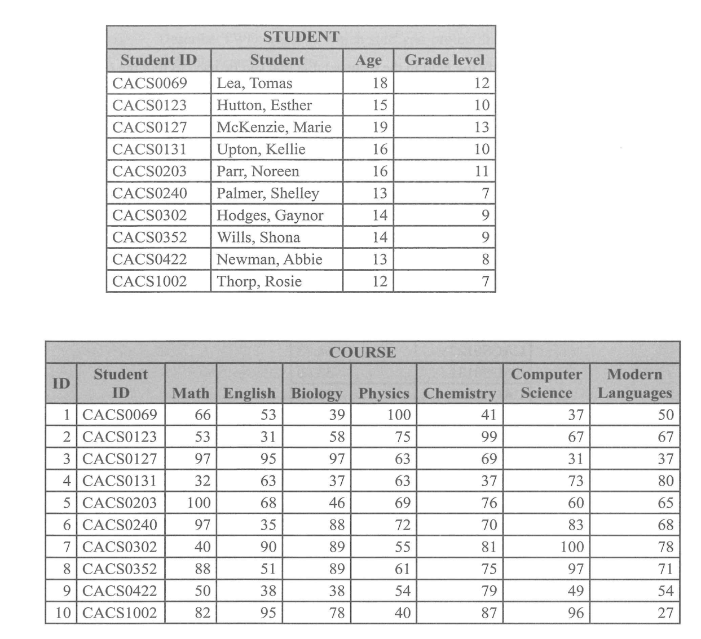

Connect Academy — classroom IT, the STUDENT & COURSE database, query results, grouping in reports, and security workshops. (20 marks)
(a) Identify TWO types of computers that can be used by teachers and students during lessons. (2 marks)
Any TWO of: Notebooks/Laptops and Desktops. (Other accepted: tablets, smartphones, Chromebooks, interactive whiteboard PCs.)
1 mark each = 2 marks.
(b) Name ONE hardware device that may be useful for presenting lessons in the classroom. (1 mark)
Pointer. Other accepted answers: projector, mouse.
(c) Identify ONE other storage method by which the school can gain access to its data if the data on its local storage gets lost or becomes corrupted. (1 mark)
Cloud storage — copies of the school's data are kept on remote servers (e.g., Google Drive, OneDrive, Dropbox), so the data can be retrieved over the Internet if the local copy is lost or damaged.
Reference — STUDENT + COURSE tables

Reproduced from the source paper — Q1(d) refers to these tables throughout.
(d)(i) State the appropriate data types that would have been used in creating EACH of the following fields of the Student table. (4 marks)
Field name
Data type
Student ID
Short text
Student
Short text
Age
Numeric
Grade level
Numeric
1 mark each = 4 marks. Student ID and Student are alphanumeric/textual; Age and Grade level hold whole-number values that may need arithmetic / comparison.
(d)(ii) State the field that would be used as the primary key in the Student table. (1 mark)
Student ID — uniquely identifies each student record (no two students share the same ID).
(d)(iii) Identify the field in the Course table that can be used to link the Course table and the Student table, and state the name of the key given to the field. (2 marks)
The linking field is Student ID, and in the Course table it acts as a Foreign Key — it references the Student ID primary key in the Student table.
1 mark for the field; 1 mark for "foreign key" = 2 marks.
(d)(iv) The following is the result of a query which was designed to display the course average of each student. State the feature that was used in the query to generate the course average. (1 mark)
Totals (the Totals row in query design view) using the Avg aggregate function across the subject-mark columns.
(d)(v) When creating reports in a database, grouping can be very useful. Explain the purpose of grouping. (2 marks)
The purpose of grouping is to summarize data related to the same value in a column, making it easier for the user to understand the data as a whole — for example, listing all students per grade level together, with subtotals, averages or counts produced for each group.
(e)(i) Describe TWO ways by which staff can protect their computers and data from possible security threats. (4 marks)
Staff can protect their computers by using effective passwords on their devices — strong, unique passwords (mix of upper/lower case, digits and symbols) make it much harder for attackers to gain unauthorised access. (2 marks)
Staff can also install antivirus detection software — antivirus tools scan files and email attachments for known malware (viruses, ransomware, trojans) and remove threats before they can damage data or spread on the school network. (2 marks)
(e)(ii) State TWO personal security measures students should take when they are online. (2 marks)
Two personal security measures students can take are never accessing website URLs without checking them for authenticity (always verify the spelling of the address before clicking — phishing sites often mimic real ones with a single changed character) and limiting access to open Wi-Fi networks (public Wi-Fi can be intercepted; sensitive activity should be done on trusted networks only).
(a)(i) State the word-processing feature that was used to create the invoice. (1 mark)
Mail Merge or Table — Mail Merge populates the customer's name/address fields automatically from a data source; the structured invoice grid itself is laid out using the Table feature.
(a)(ii) Identify the justification that has been applied to all monetary values. (1 mark)
Right justification — currency amounts are right-aligned so the digits line up by place value (units below units, tens below tens), which is the standard for monetary columns.
(a)(iii) The company's logo is missing from the invoice. The logo is stored in a desktop folder on the sales manager's computer. List, in correct order, the steps that should be taken to insert the logo to the right of the company's name. (4 marks)
Place the cursor at the right of the company name.
Navigate to the Insert tab and select Insert from file.
Navigate to the file location of the image on the desktop.
Select Open and the image will be inserted next to the company name.
Finally, adjust the image size as needed.
1 mark per correctly-ordered step; full 4 marks awarded for any 4 of the 5 steps in the right order.
(b) The company's website was recently updated to include the new services and products available. Outline TWO checks that should be carried out before publishing a website. (4 marks)
Verify that all hyperlinks work properly — broken links frustrate visitors and damage the brand; every link should be tested before launch. (2 marks)
Verify that all the content is up-to-date — make sure prices, contact info, product descriptions and dates reflect the current state of the business. (2 marks)
Other accepted: perform a user test where a test user navigates through the website and confirms it functions as expected.
(c) When customers hire Impact Security Services for their computer and data security needs, the company does an audit to assess the areas of vulnerability and the possible threats that may occur. Define EACH of the following terms in relation to computer security and provide an example of each. (4 marks)
(i) Vulnerability — a computer vulnerability is simply a weakness or a flaw in any part of a computer system that could allow a threat (like a hacker or a virus) to cause damage. Example: Lack of antivirus, outdated user accounts, poor access control. (2 marks)
(ii) Threat — a security threat is something that tries to take advantage of a weakness in a computer system or its data. Example: A phishing link, malicious software (a virus or worm). (2 marks)
(d) State ONE example of EACH of the following security threats and attacks that may be discussed at the webinars. (4 marks)
Threat / Attack
Example
(i) Industrial espionage
A company hacking a competitor's database to steal confidential information.
(ii) Denial of service attack
A hacker bombarding a website with traffic, effectively overloading the server, causing the website to crash.
(iii) Ransomware
A malicious software that encrypts the victim's data unless a ransom is paid.
(iv) Data theft
An unauthorized employee stealing data from their manager's laptop that was left unattended.
1 mark each = 4 marks.
(e) State TWO ways in which phishing messages can be sent. (2 marks)
Phishing messages can be sent via text (SMS) or via email — both are the most common delivery channels because they reach a wide audience cheaply and can be made to look like legitimate communications from banks, courier companies or social platforms.
1 mark each.
Question 3
Kickstart Investments — type of network, intranet vs extranet, network paragraph fill-in, and the Return-on-Investment algorithm. (25 marks)
(a) Both office locations have their own Local Area Network (LAN). Identify the type of network that would be needed to connect both locations. (1 mark)
WAN — Wide Area Network. A WAN spans large geographical distances and is the appropriate technology to interconnect two LANs in different offices.
(b) Differentiate between 'intranet' and 'extranet'. (2 marks)
An intranet is a private network that belongs to an organisation and is designed to only be accessed by staff or persons with authorisation. (1 mark)
When a portion of that network is opened up to external persons such as a supplier or client, that part is called the extranet. (1 mark)
(c) Complete the paragraph by filling in the blank spaces with the MOST appropriate term provided. (7 marks)
Shortly after the opening of the new office, some of the employees and customers were experiencing difficulties completing tasks. The
network administrator did some troubleshooting and realised that the
modem that converts digital data to analog signals was disconnected. Not too long after that the manager and server staff at all the computers on the network. This prevented the employees from going online and accessing the
Internet. Throughout on the third floor were unable to access certain files on the network due to a power supply (hardware) failure of the
server that was used to connect all the devices on that floor to the main computer that manages the network. The
web manager also did some checks which revealed that some of the
hyperlinks on the website were broken. This prevented customers from completing certain transactions.
In order: network administrator, modem, switch, Internet, server, web manager, hyperlinks. 1 mark each = 7 marks.
(d)(i) Complete the IPO chart for the algorithm to be written. (3 marks)
Input
Processing
Output
initial_investment, rate
Calculate return on investment
return_on_investment
1 mark for inputs; 1 mark for processing description; 1 mark for output = 3 marks.
(d)(ii) Write the pseudocode for the algorithm. (8 marks)
Marks: 1 START / STOP; 2 input statements; 2 correct ROI formula (matching the question's definition); 2 output statement; 1 overall correctness/structure = 8 marks.
(d)(iii) If initial investment is greater than $100 000, the rate of return is 45%; if it is less than or equal to $100 000, the rate of return is 37%. Write an appropriate compound conditional statement to evaluate each rate. (3 marks)
IF initial_investment > 100000 THEN
rate = 45
ELSE IF initial_investment <= 100000 THEN
rate = 37
ENDIF
1 mark for the IF condition; 1 mark for the ELSE IF; 1 mark for both rate assignments + ENDIF = 3 marks.
(d)(iv) State the return on investment that would be received if the initial investment amount was $150 000 and the rate of return was 45%. (3 marks)
Nigel's Elite Sports club — verification on application forms; spreadsheet for monies collected; pseudocode + flowchart to total funds received. (25 marks)
(a)(i) State ONE type of error that could be present after entering the data from the application forms. (1 mark)
Transpositional errors (where two characters are accidentally swapped, e.g., typing "ELite" as "ELtie"). Alternative answer: typographical errors.
(a)(ii) Describe TWO verification checks that can be performed when entering data from application forms. (4 marks)
Double entry — this is where the same data is typed in twice. A computer program then checks both versions to see if they match; if they do not, the user is alerted to the discrepancy. (2 marks)
Proofreading — this is where information is shown again on the screen after it's typed in. The person entering the data is asked to look it over and confirm that everything is correct; if something is wrong, they can fix it by typing it again. (2 marks)
(b)(i) Name the spreadsheet function that will display the number of cells in the range B3:B10 that contains the activity "Tennis". (1 mark)
COUNTIF — e.g., =COUNTIF(B3:B10, "Tennis") returns the count of cells in the range whose value is "Tennis".
(b)(ii) Write the formula that was used in Cell E3 to calculate the amount due. (3 marks)
=C3*D3
Amount due = Session hours × Cost/hour. Multiplying the value in cell C3 (session hours) by the value in D3 (cost per hour) gives the amount that member owes for that activity.
1 mark for the equals sign + multiplication operator; 1 mark for the correct cell references; 1 mark for the right pair of columns being chosen.
(b)(iii) The IF function performs a logical comparison between two values in a spreadsheet. Describe the syntax of the IF function. (4 marks)
IF(logical_test, value_if_true, value_if_false)
logical_test — this is a logical statement that can be evaluated to be either true or false. (1 mark)
value_if_true — this represents the value to be displayed in the cell if the logical test value is true. (1 mark)
value_if_false — this represents the value to be displayed in the cell if the logical test value is false. (1 mark)
+ 1 mark for naming the three arguments in the correct order = 4 marks.
(b)(iv) Identify both the primary field and the secondary field used to sort the data as displayed in the spreadsheet at (b). (2 marks)
Primary field: Activity (sorted alphabetically — Badminton group first, Swimming, then Tennis).
Secondary field: Amount due. Alternative answer: Session hours.
1 mark each = 2 marks.
(c) Pseudocode generating total funds — for reference
Start
total = 0
Print "Enter amount due for member"
Read amountdue
While (amountdue <> 0) do
total = total + amountdue
Print "Enter amount due for next member"
Read amountdue
Endwhile
Print "Total amount collected:", total
Stop
(c) Design a flowchart to represent the pseudocode above. (10 marks)
The flowchart must mirror the WHILE loop structure of the pseudocode:
Start oval.
Process box: total = 0.
Output parallelogram: Print "Enter amount due for member".
Input parallelogram: Read amountdue.
Decision diamond: Is amountdue not equal to 0?
YES branch (loop body):
Process: total = total + amountdue
Output: Print "Enter amount due for next member"
Input: Read amountdue
Loop back to the same decision diamond.
NO branch:
Output: Print "Total amount collected: ", total
Stop oval.
Marks: 1 Start/Stop ovals; 1 initialise total = 0; 2 prompts (input + output parallelograms); 2 correct decision diamond with the "amountdue ≠ 0" condition; 2 loop body (accumulator update + re-prompt + re-read); 1 loop-back arrow returning to the decision; 1 final output of total before Stop = 10 marks.
Solutions generated by Kairu, cross-checked against teacher-authored marking notes — Student Hub's AI system, trained by The Student Hub. AI can make mistakes — always cross-check tricky answers with your teacher and class notes.